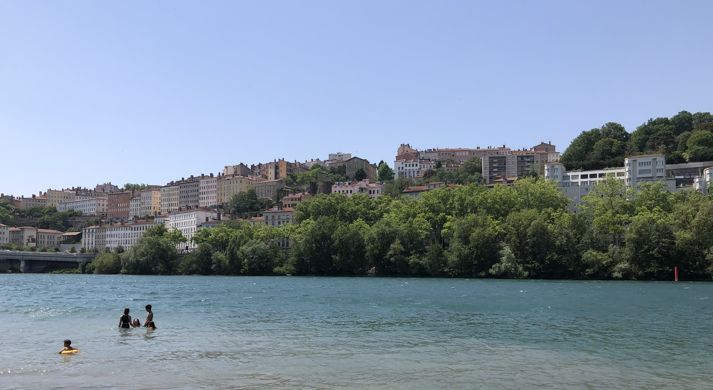

I was fortunate to study abroad in Lille, France during the summer of 2022,
where I took Physics II and Engineering Arts. The program provided
an exceptional opportunity to explore the culture and architecture throughout
France and Belgium, as we were provided field trips and a free week during
the semester.
Lille, my host city, is a relatively small
urban area in the most northern region of France. A 25-minute walk
could bring one from the edge of town to the Grand Place, the central square.
Restaurants, clothing retailers, bars, and bakeries are ubiquitous in Lille,
making every street feel like its own downtown. Between the cobblestone streets,
narrow alleys, and lack of cars, it is an incredible experience for someone who
is out of the U.S. for the first time. Living here for two months, I learned that
a city can be simultaneously busy yet quiet and tame.


It seemed like Lyon, France was built as a movie set for romantic vacation scenes.
It seriously would be difficult to find something aesthetically wrong with this
town; the sand-colored buildings with clay barrel roofing planted on the hillside
and reflecting off a Caribbean blue river was a phenomenal view. The town also
impresses with its food, as Lyon is named the gastronomical capital of the world.
I can at least vouch for the eggplant marinara and eggs on toast; they were the
cheapest items on their menus, but they had me planning on recreating those dishes
for when I got back home.
Bruges, one of our field trip destinations, is a beautiful Venice-like
town in Belgium. This area is trapped in the 1700s with its historic
architecture and lack of modern facades and exteriors. A canal tour around the
community is one way to see the Gothic style buildings. When walking, though,
you’ll also pass by numerous chocolate and macaroon shops. During my two trips here,
I had the best desserts of my entire study abroad.
These towns signficantly improved my awareness about the approaches
to cultural preservation through architecture and zoning that the U.S. tends
to disregard. There are definitely some advantages, aesthetically and functionally, to
the way France and Belgium have chosen to modernize their cities.